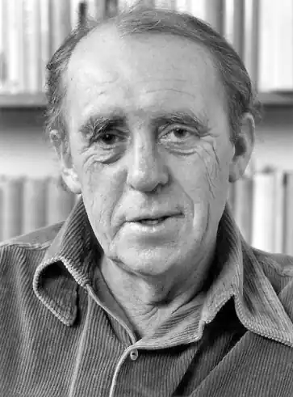

Белль завжди був письменником великого масштабу, стурбованим долею як цілого покоління німців, так і окремої особистості, змушеної жити в колосальних сучасних міських мурашниках
Генріх Теодор Белль, німецький прозаїк і новеліст, народився в Кельні, одному із самих великих міст Рейнської долини, в багатодітній родині червонодеревника Віктора Белля і Марі (Херманнс) Белль. Предки Б. бігли з Англії при Генріху XIII: як і всі ревні католики, вони піддавалися гонінням з боку англіканської церкви.
Після закінчення середньої школи в Кельні Б., який писав вірші й оповідання з раннього дитинства, виявився одним з небагатьох учнів у класі, які не вступили в гітлерюгенд. Тим не менш через рік після закінчення школи юнак був притягнутий до примусових трудових робіт, а в 1939 р. призваний на військову службу. Служив Б. капралом на Східному та Західному фронтах, кілька разів був поранений і в кінці кінців в 1945 р. потрапив у полон до американців, після чого просидів кілька місяців у таборі для військовополонених на півдні Франції. Після повернення в рідне місто Б. недовгий час навчався в Кельнському університеті, потім працював в майстерні батька, в міському бюро демографічної статистики і при цьому не переставав писати – в 1949 р. вийшла у світ і отримала позитивний відгук критики перша повість "Поїзд прийшов вчасно" ("Der Zug war punktlich"), історія про молодого солдата, якому належить повернення на фронт і швидка смерть. "Поїзд прийшов вчасно" – це перший твір Б. з серії книг, у яких описується безглуздість війни та труднощі післявоєнних років; такі "Подорожній, коли прийдеш у Спа…" ("Wanderer, kommst du nach Spa", 1950), "Де ти був, Адам?" ("Wo warst du, Adam?", 1951) і "Хліб ранніх років" ("Das Brot der fruhcn Jahre", 1955). Авторська манера Б., писав просто і ясно, була орієнтована на відродження німецької мови після пихатого стилю нацистського режиму. Відійшовши у своєму першому романс "Більярд о пів на десяту" ("Billiard um halbzehn", 1959) від манери Trummer literatur ("літератури руїн"), Б. оповідає про сім'ю відомих кельнських архітекторів. Хоча дія романаограничено всього одним днем, завдяки ремінісценціям і відступам у романі розповідається про три покоління – панорама роману охоплює період від останніх років правління кайзера Вільгельма до процвітаючої "нової" Німеччини 50-х рр. "Більярд о пів на десяту" значно відрізняється від попередніх творів Б. – і не тільки масштабом подачі матеріалу, але й формальною ускладненістю. "Ця книга, – писав німецький критик Генрі Плард, – доставляє величезну втіху читачеві, бо показує цілющість людської любові". У 60-ті рр. твори Б. стають композиційно ще більш складними. Дія повісті "Очима клоуна" ("Ansichten eines Clowns", 1963) відбувається також протягом одного дня; у центрі оповідання знаходиться молодий чоловік, який говорить по телефону і від імені якого ведеться оповідання; герой воліє грати роль блазня, аби тільки не підкоритися лицемірству післявоєнного суспільства. "Тут ми знову стикаємося з головними темами Б.: нацистське минуле представників нової влади і роль католицької церкви в післявоєнній Німеччині", – писав німецький критик Дітер Хенике. Темою "Самовільної відлучки" ("Entfernung von der Truppe", 1964) і "Кінця однієї відрядження" ("Das Ende einer Dienstfahrt", 1966) також є протидія офіційній владі. Більш об'ємний і набагато складніший порівняно з попередніми творами роман "Груповий портрет з дамою" ("Gruppenbild mit Dame", 1971) написаний у формі репортажу, що складається з інтерв'ю і документів про Лені Пфейффере, завдяки чому розкриваються долі ще шістдесяти чоловік. "Простежуючи протягом півстоліття німецької історії життя Ліні Пфейффера, – писав американський критик Річард Локк, Б. створив роман, присвячений загальнолюдські цінності". "Груповий портрет з дамою" був згаданий під час присудження Б. Нобелівської премії (1972), отриманої письменником "за творчість, у якій сполучається широке охоплення дійсності з високим мистецтвом створення характерів і яка стала вагомим внеском у відродження німецької літератури". "Це відродження, сказав у своїй промові представник Шведської академії Карл Рагнар Гиров, – можна порівняти з воскресінням повсталої з попелу культури, яка, здавалося, була приречена на повну загибель і тим не менш, до нашої загальної радості і користі, дала нові пагони". До того часу як Б. одержав Нобелівську премію, його книги стали широко відомі не тільки в Західній, але й у Східній Німеччині і навіть у Радянському Союзі, де було розпродано кілька мільйонів екземплярів його творів. Разом з тим Б. зіграв помітну роль у діяльності ПЕН-клубу, міжнародної письменницької організації, за допомогою якої він надавав підтримку письменникам, піддана утискам у країнах комуністичного режиму. Після того як Олександр Солженіцин у 1974 р. був висланий з Радянського Союзу, він до від'їзду в Париж жив у Б. У тому ж році, коли Б. надав допомогу Солженіцину, він написав публіцистичну повість "Спаплюжена честь Катаріни Блюм" ("Die verlorene Ehre der Катаріна Blum"), у якій виступив з різкою критикою продажної журналістики. Це розповідь про несправедливо обвинуваченої жінці, яка в кінці кінців вбиває оболгавшего її репортера. У 1972 р., коли преса була переповнена матеріалами про терористичної групи Баадера Мейнхоф, Б. пише роман "Під конвоєм турботи ("Fursorgliche Вlagerung". 1979), в якому описуються руйнівні соціальні наслідки, що виникають через необхідність посилювати заходи безпеки під час масового насильства. У 1942 р. Б. одружився з Анною Марі Чех, яка народила йому двох синів. Разом з дружиною Б. перекладав на німецьку мову таких американських письменників, як Бернард Маламуд і Селінджер. Помер Б. у віці 67 років, перебуваючи під Бонном, в гостях у одного з своїх синів. У тому ж 1985 р. був виданий перший роман письменника "Солдатське спадщина" ("Das Vermachtnis"), який був написаний в 1947 р., однак публікувався вперше. "Солдатське спадщину" оповідає про криваві події, що відбувалися під час війни в районі Атлантики і Східного фронту. Незважаючи на те, що в романі відчувається деякий надрив, зазначає американський письменник Вільям Бойд, "Солдатське спадщина" є твором зрілим і досить значним; "від нього віє вистражданими ясністю і мудрістю". У своїх романах, оповіданнях, п'єсах та есе, що склали майже сорок томів, Б. зобразив іноді в сатиричній формі – Німеччину під час другої світової війни і в післявоєнний період. Як писав англійський критик і літературознавець У. Е. Йуилл, "Б. завжди був письменником великого масштабу, стурбованим долею як цілого покоління німців, так і окремої особистості, змушеної жити в колосальних сучасних міських мурашниках". Втім, далеко не всі критики високо оцінювали талант Б. "Найчастіше доводиться чути звинувачення в тому, що в його творах переважають сентименталізм та ідеалізм, що він не завжди в змозі адекватно висловити свої наміри", – писав американський літературознавець Роберт К. Конард. Нападки Б. на практицизм сучасного суспільства представляються американському критику Пітеру Демецу занадто наївними. "За моральним імперативом Б., – пише Демец, насправді ховається глибоке відраза до повсякденних, непомітним, прагматичним вчинків. Все або нічого". На думку американського вченого Теодора Ціолковського, "Б. є одним з небагатьох післявоєнних німецьких письменників, які створили те, що вірніше всього назвати… уніфікованим, вигаданим світом, живиться постійною моральною проповіддю". Порівнюючи Кельн Б. з Йокнапатофой Вільяма Фолкнера, Ціолковський також зауважує: "Б. не тільки наніс на літературну карту Німеччини ще одну область, яку слід визнати його виключною власністю, але і створив собі репутацію провідного побутописання Німеччини середини нашого століття".